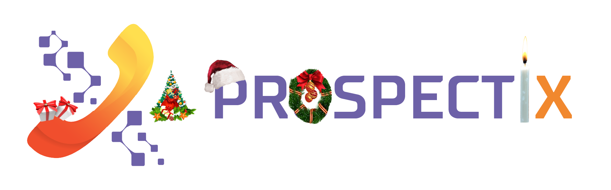

<div
  [class]="'navbar bg-primary bg-opacity-5 transition-all'+class+' '+(scrolling && 'shadow backdrop-blur-3xl bg-primary bg-opacity-5')"
  *ngIf="authService.loggedInSubject">

  <!-- left part of navbar -->
  <div class="flex-1 menu horizontal space-x-2">

    <!-- Prospectix logo button -->
      <!-- <app-prospectix-logo [class]="'w-10 h-10'"></app-prospectix-logo> -->
        <!-- ? default logo -->
      <!-- -->  <!-- ? Xmas logo -->

      <!--  --> <!-- ? halloween version -->

    <!-- ! Versions button -->
    <li>
      <label *ngIf="authService.currentUserSubject.getValue() && authService.currentUserSubject.getValue().admin"
        for="modal-version"
        class="bg-opacity-0 {{dataThemeService.dataTheme == 'jisep' ? 'hover:bg-clip-text hover:text-transparent hover:bg-gradient-to-r hover:from-secondary hover:to-accent hover:stroke-secondary stroke-current': 'hover:text-primary stroke-current'}} normal-case text-xs modal-button indicator">Versions<span
          *ngIf="changelogsService.changelogs[0].version != this.changelogsService.localVersion"
          class="badge badge-secondary indicator-item badge-xs"></span>
        <svg xmlns="http://www.w3.org/2000/svg" fill="none" viewBox="0 0 24 24" stroke-width="1.5" class="w-3 h-3 ">
          <path stroke-linecap="round" stroke-linejoin="round"
            d="M16.5 10.5V6.75a4.5 4.5 0 10-9 0v3.75m-.75 11.25h10.5a2.25 2.25 0 002.25-2.25v-6.75a2.25 2.25 0 00-2.25-2.25H6.75a2.25 2.25 0 00-2.25 2.25v6.75a2.25 2.25 0 002.25 2.25z" />
        </svg>
      </label>
    </li>

    <!-- ! Button statistics -->
    <a routerLink="/statistics"
      class="{{dataThemeService.dataTheme == 'jisep' ? router.url == '/statistics' ? 'bg-clip-text text-transparent bg-gradient-to-r from-secondary to-accent stroke-secondary' : 'hover:bg-clip-text hover:text-transparent hover:bg-gradient-to-r hover:from-secondary hover:to-accent hover:stroke-secondary stroke-current': router.url == '/statistics' ? 'text-primary stroke-primary' : 'hover:text-primary hover:stroke-primary stroke-current'}}">
      <svg xmlns="http://www.w3.org/2000/svg" fill="none" viewBox="0 0 24 24" stroke-width="1.5" class="w-6 h-6 ">
        <path stroke-linecap="round" stroke-linejoin="round" d="M10.5 6a7.5 7.5 0 107.5 7.5h-7.5V6z" />
        <path stroke-linecap="round" stroke-linejoin="round" d="M13.5 10.5H21A7.5 7.5 0 0013.5 3v7.5z" />
      </svg>
    </a>

    <!-- ! Button dashboard -->
    <a routerLink="/dashboard"
      class="{{dataThemeService.dataTheme == 'jisep' ? router.url == '/dashboard' ? 'bg-clip-text text-transparent bg-gradient-to-r from-secondary to-accent stroke-secondary' : 'hover:bg-clip-text hover:text-transparent hover:bg-gradient-to-r hover:from-secondary hover:to-accent hover:stroke-secondary stroke-current': router.url == '/dashboard' ? 'text-primary stroke-primary' : 'hover:text-primary hover:stroke-primary stroke-current'}}">
      <svg xmlns="http://www.w3.org/2000/svg" fill="none" viewBox="0 0 24 24" stroke-width="1.5" class="w-6 h-6">
        <path stroke-linecap="round" stroke-linejoin="round" d="M15.59 14.37a6 6 0 01-5.84 7.38v-4.8m5.84-2.58a14.98 14.98 0 006.16-12.12A14.98 14.98 0 009.631 8.41m5.96 5.96a14.926 14.926 0 01-5.841 2.58m-.119-8.54a6 6 0 00-7.381 5.84h4.8m2.581-5.84a14.927 14.927 0 00-2.58 5.84m2.699 2.7c-.103.021-.207.041-.311.06a15.09 15.09 0 01-2.448-2.448 14.9 14.9 0 01.06-.312m-2.24 2.39a4.493 4.493 0 00-1.757 4.306 4.493 4.493 0 004.306-1.758M16.5 9a1.5 1.5 0 11-3 0 1.5 1.5 0 013 0z" />
      </svg>      
    </a>
  </div>

  <!-- Right part of the header -->
  <ul class="menu-horizontal menu">

    <!-- ! page recherche -->
    <li>
      <a routerLink="/prospects"
        class="bg-opacity-0 text-xl font-medium {{dataThemeService.dataTheme == 'jisep' ? router.url == '/prospects' ? 'bg-clip-text text-transparent bg-gradient-to-r from-secondary to-accent stroke-secondary' : 'hover:bg-clip-text hover:text-transparent hover:bg-gradient-to-r hover:from-secondary hover:to-accent hover:stroke-secondary stroke-current': router.url == '/prospects' ? 'text-primary stroke-current' : 'hover:text-primary stroke-current hover:stroke-primary'}}">Recherche
        <svg xmlns="http://www.w3.org/2000/svg" fill="none" viewBox="0 0 24 24" stroke-width="1.5"
          class="w-6 h-6 stroke-inherit">
          <path stroke-linecap="round" stroke-linejoin="round"
            d="M21 21l-5.197-5.197m0 0A7.5 7.5 0 105.196 5.196a7.5 7.5 0 0010.607 10.607z" />
        </svg>
      </a>
    </li>

    <!-- ! page Favoris -->
    <li>
      <a routerLink="/bookmarks"
        class="bg-opacity-0 text-xl font-medium {{dataThemeService.dataTheme == 'jisep' ? router.url == '/bookmarks' ? 'bg-clip-text text-transparent bg-gradient-to-r from-secondary to-accent stroke-secondary' : 'hover:bg-clip-text hover:text-transparent hover:bg-gradient-to-r hover:from-secondary hover:to-accent hover:stroke-secondary stroke-current': router.url == '/bookmarks' ? 'text-primary stroke-current' : 'hover:text-primary stroke-current hover:stroke-primary'}}">Favoris
        <svg xmlns="http://www.w3.org/2000/svg" fill="none" viewBox="0 0 24 24" stroke-width="1.5" class="w-6 h-6 ">
          <path stroke-linecap="round" stroke-linejoin="round"
            d="M11.48 3.499a.562.562 0 011.04 0l2.125 5.111a.563.563 0 00.475.345l5.518.442c.499.04.701.663.321.988l-4.204 3.602a.563.563 0 00-.182.557l1.285 5.385a.562.562 0 01-.84.61l-4.725-2.885a.563.563 0 00-.586 0L6.982 20.54a.562.562 0 01-.84-.61l1.285-5.386a.562.562 0 00-.182-.557l-4.204-3.602a.563.563 0 01.321-.988l5.518-.442a.563.563 0 00.475-.345L11.48 3.5z" />
        </svg>
      </a>
    </li>

    <!-- ! page Rappels -->
    <li>
      <a routerLink="/reminders"
        class="bg-opacity-0 text-xl font-medium {{dataThemeService.dataTheme == 'jisep' ? router.url == '/reminders' ? 'bg-clip-text text-transparent bg-gradient-to-r from-secondary to-accent stroke-secondary' : 'hover:bg-clip-text hover:text-transparent hover:bg-gradient-to-r hover:from-secondary hover:to-accent hover:stroke-secondary stroke-current': router.url == '/reminders' ? 'text-primary stroke-current' : 'hover:text-primary stroke-current hover:stroke-primary'}}">Rappels
        <svg xmlns="http://www.w3.org/2000/svg" fill="none" viewBox="0 0 24 24" stroke-width="1.5" class="w-6 h-6 ">
          <path stroke-linecap="round" stroke-linejoin="round"
            d="M14.857 17.082a23.848 23.848 0 005.454-1.31A8.967 8.967 0 0118 9.75v-.7V9A6 6 0 006 9v.75a8.967 8.967 0 01-2.312 6.022c1.733.64 3.56 1.085 5.455 1.31m5.714 0a24.255 24.255 0 01-5.714 0m5.714 0a3 3 0 11-5.714 0" />
        </svg>
      </a>
    </li>

    <!-- ! Page rendez-vous -->
    <li>
      <a routerLink="/meetings"
        class="bg-opacity-0 text-xl font-medium {{dataThemeService.dataTheme == 'jisep' ? router.url == '/meetings' ? 'bg-clip-text text-transparent bg-gradient-to-r from-secondary to-accent stroke-secondary' : 'hover:bg-clip-text hover:text-transparent hover:bg-gradient-to-r hover:from-secondary hover:to-accent hover:stroke-secondary stroke-current': router.url == '/meetings' ? 'text-primary stroke-current' : 'hover:text-primary stroke-current hover:stroke-primary'}}">Rendez-vous
        <svg xmlns="http://www.w3.org/2000/svg" fill="none" viewBox="0 0 24 24" stroke-width="1.5" class="w-6 h-6 ">
          <path stroke-linecap="round" stroke-linejoin="round"
            d="M15.75 6a3.75 3.75 0 11-7.5 0 3.75 3.75 0 017.5 0zM4.501 20.118a7.5 7.5 0 0114.998 0A17.933 17.933 0 0112 21.75c-2.676 0-5.216-.584-7.499-1.632z" />
        </svg>
      </a>
    </li>

    <!-- ! Page mails -->
    <li>
      <a routerLink="/mails"
        class="bg-opacity-0 text-xl font-medium {{dataThemeService.dataTheme == 'jisep' ? router.url == '/mails' ? 'bg-clip-text text-transparent bg-gradient-to-r from-secondary to-accent stroke-secondary' : 'hover:bg-clip-text hover:text-transparent hover:bg-gradient-to-r hover:from-secondary hover:to-accent hover:stroke-secondary stroke-current': router.url == '/mails' ? 'text-primary stroke-current' : 'hover:text-primary hover:stroke-primary stroke-current'}}">Mails
        <svg xmlns="http://www.w3.org/2000/svg" fill="none" viewBox="0 0 24 24" stroke-width="1.5" class="w-6 h-6 ">
          <path stroke-linecap="round" stroke-linejoin="round"
            d="M21.75 6.75v10.5a2.25 2.25 0 01-2.25 2.25h-15a2.25 2.25 0 01-2.25-2.25V6.75m19.5 0A2.25 2.25 0 0019.5 4.5h-15a2.25 2.25 0 00-2.25 2.25m19.5 0v.243a2.25 2.25 0 01-1.07 1.916l-7.5 4.615a2.25 2.25 0 01-2.36 0L3.32 8.91a2.25 2.25 0 01-1.07-1.916V6.75" />
        </svg>
      </a>
    </li>

    <!-- ! Dropdown admin -->
    <div
      *ngIf="authService.currentUserSubject.getValue() && authService.currentUserSubject.getValue().admin"
      class="dropdown dropdown-end">
      <label tabindex="0"
        class="btn btn-ghost bg-opacity-0 text-xl font-medium hover:bg-opacity-0 {{dataThemeService.dataTheme == 'jisep' ? router.url == '/users' || router.url == '/goals' || router.url == '/watchtower' ? 'bg-clip-text text-transparent bg-gradient-to-r from-secondary to-accent stroke-secondary' : 'hover:bg-clip-text hover:text-transparent hover:bg-gradient-to-r hover:from-secondary hover:to-accent hover:stroke-secondary stroke-current': router.url == '/users' || router.url == '/goals' || router.url == '/watchtower' ? 'text-primary stroke-current' : 'hover:stroke-primary hover:text-primary stroke-current'}}">{{router.url
        == "/users" ? 'User' : router.url == "/goals" ? 'Objectifs' : router.url == '/watchtower' ? 'Tour de contrôle' : 'Admin'}}</label>
      <ul tabindex="0" class="menu dropdown-content p-2 shadow bg-base-100 rounded-box mt-4 w-60 outline outline-1">

        <!-- ? Page users -->
        <li routerLink="/users"><a 
            class="w-full {{dataThemeService.dataTheme == 'jisep' ? router.url == '/users' ? 'bg-clip-text text-transparent bg-gradient-to-r from-secondary to-accent stroke-secondary' : 'hover:bg-clip-text hover:text-transparent hover:bg-gradient-to-r hover:from-secondary hover:to-accent hover:stroke-secondary stroke-current': router.url == '/users' ? 'text-primary stroke-current' : 'hover:text-primary stroke-current'}}">Users</a>
        </li>

        <!-- ? page Objectifs -->
        <li routerLink="/goals">
          <a 
            class="w-full {{dataThemeService.dataTheme == 'jisep' ? router.url == '/goals' ? 'bg-clip-text text-transparent bg-gradient-to-r from-secondary to-accent stroke-secondary' : 'hover:bg-clip-text hover:text-transparent hover:bg-gradient-to-r hover:from-secondary hover:to-accent hover:stroke-secondary stroke-current': router.url == '/goals' ? 'text-primary stroke-current' : 'hover:text-primary stroke-current '}}">Objectifs
          </a>
        </li>

        <!-- ? page Tour de controle -->
        <li routerLink="/watchtower">
          <a 
            class="w-full {{dataThemeService.dataTheme == 'jisep' ? router.url == '/watchtower' ? 'bg-clip-text text-transparent bg-gradient-to-r from-secondary to-accent stroke-secondary' : 'hover:bg-clip-text hover:text-transparent hover:bg-gradient-to-r hover:from-secondary hover:to-accent hover:stroke-secondary stroke-current': router.url == '/watchtower' ? 'text-primary stroke-current' : 'hover:text-primary stroke-current '}}">Tour de contrôle des objectifs
          </a>
        </li>
      </ul>
    </div>

    <!-- ! Dropdown themes -->
    <li class="dropdown dropdown-end">
      <div tabindex="0" class="bg-opacity-0 hover:stroke-primary stroke-current">
        <svg xmlns="http://www.w3.org/2000/svg" fill="none" viewBox="0 0 24 24" class="w-6 stroke-inherit ">
          <path stroke-linecap="round" stroke-linejoin="round" stroke-width="1.5"
            d="M7 21a4 4 0 01-4-4V5a2 2 0 012-2h4a2 2 0 012 2v12a4 4 0 01-4 4zm0 0h12a2 2 0 002-2v-4a2 2 0 00-2-2h-2.343M11 7.343l1.657-1.657a2 2 0 012.828 0l2.829 2.829a2 2 0 010 2.828l-8.486 8.485M7 17h.01">
          </path>
        </svg>
      </div>
      <div class="dropdown-content bg-opacity-0">
        <app-theme-picker></app-theme-picker>
      </div>

    </li>

    <!-- ! Bouton déconnexion -->
    <li (click)="logout()" class="text-xs stroke-current hover:stroke-error">
      <a class="bg-opacity-0">
        <svg xmlns="http://www.w3.org/2000/svg" class="w-6 stroke-inherit" viewBox="0 0 24 24" stroke-width="1.5"
          fill="none" stroke-linecap="round" stroke-linejoin="round">
          <path stroke="none" d="M0 0h24v24H0z" fill="none" />
          <path d="M14 8v-2a2 2 0 0 0 -2 -2h-7a2 2 0 0 0 -2 2v12a2 2 0 0 0 2 2h7a2 2 0 0 0 2 -2v-2" />
          <path d="M7 12h14l-3 -3m0 6l3 -3" />
        </svg>
      </a>
    </li>
  </ul>
</div>

<!-- MODALS -->

<!-- modal version -->
<input type="checkbox" id="modal-version" class="modal-toggle" />
<label for="modal-version" class="modal cursor-pointer">
  <label class="modal-box max-w-screen-lg" for="">
    <label for="modal-version" class="btn btn-sm btn-circle absolute right-2 top-2">✕</label>
    <div class="w-full">
      <span class="text-xl font-bold stroke-current">Dev /w ❤️ by your pôle tech, started by Benjamin GONZVA <a
          href="https://www.instagram.com/ben.gonzva/" target="_blank" class="link-primary font-thin"
          *ngIf="authService.currentUserSubject.getValue() && authService.currentUserSubject.getValue().admin">(@ben.gonzva)
        </a></span>
      <ul>
        <li>2022-2023 : <a href="https://www.linkedin.com/in/benjamin-gonzva-828b071a2/" target="_blank"
            class="link-primary">Benjamin GONZVA</a></li>
      </ul>
      <div class="divider"></div>
      <app-changelogs class="w-full max-h-screen"></app-changelogs>
    </div>
  </label>
</label>
